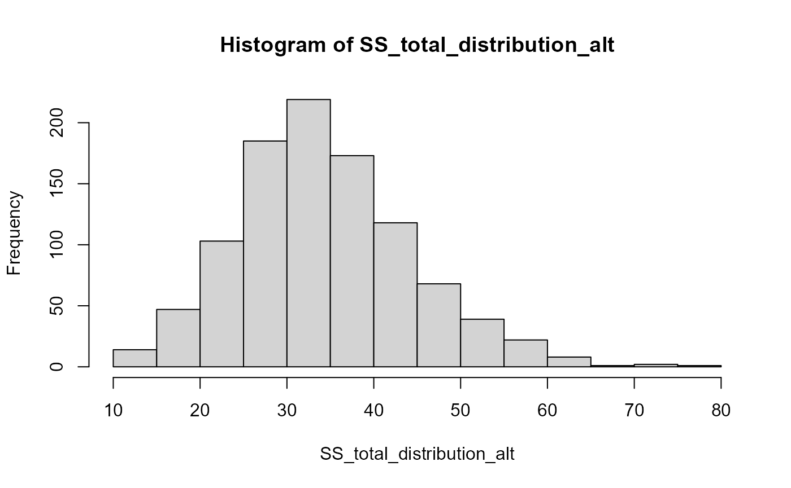
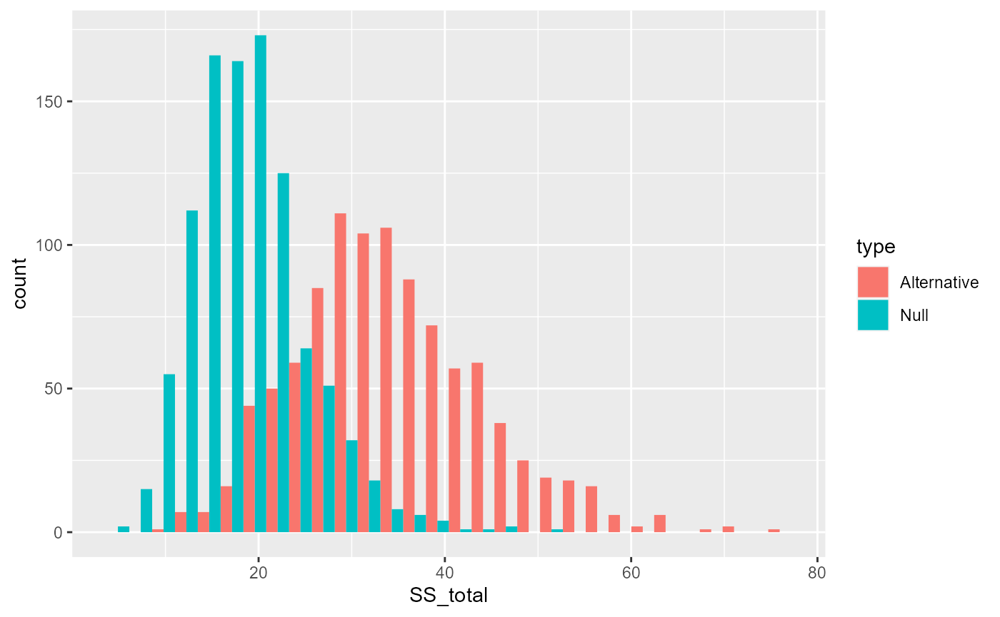
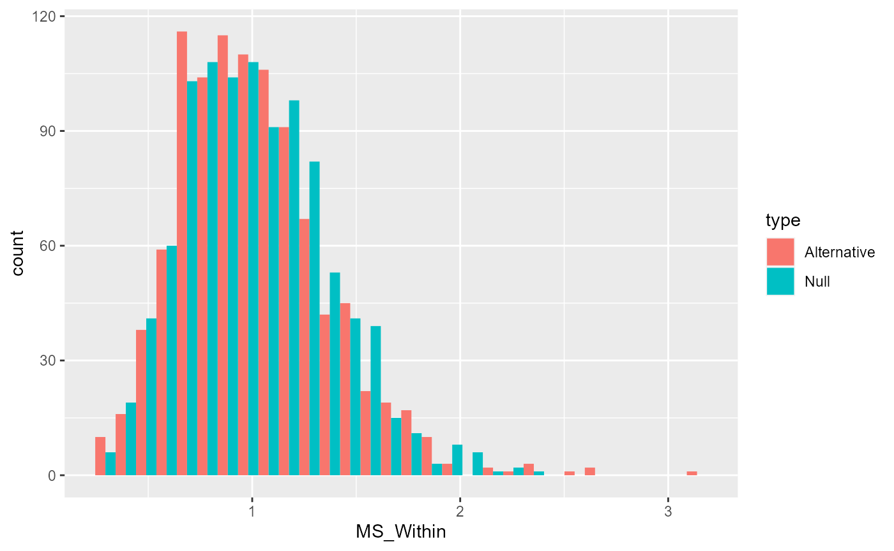
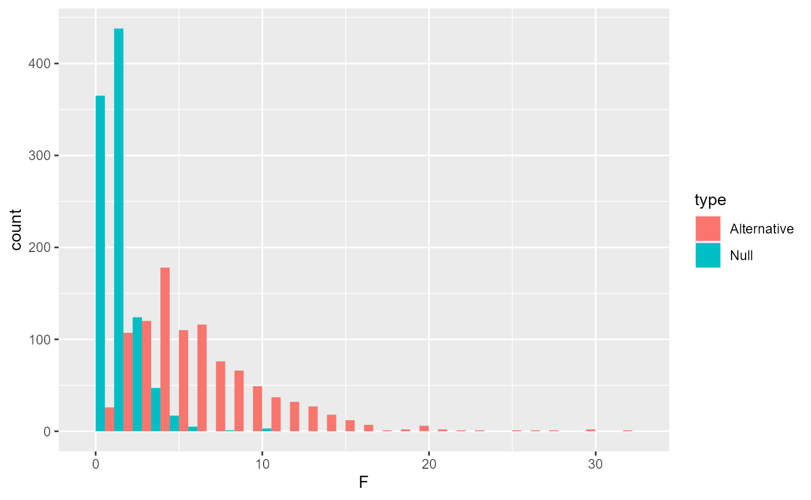
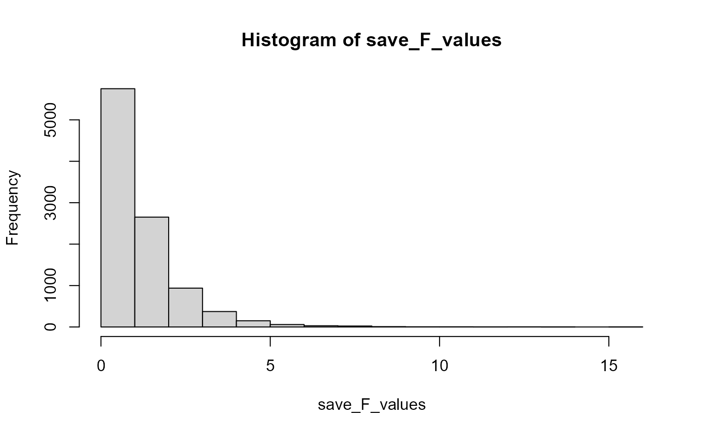

Lab4_ANOVA.Rmd
library(tibble)
#> Warning: package 'tibble' was built under R version 4.1.3
library(dplyr)
#> Warning: package 'dplyr' was built under R version 4.1.3
#>
#> Attaching package: 'dplyr'
#> The following objects are masked from 'package:stats':
#>
#> filter, lag
#> The following objects are masked from 'package:base':
#>
#> intersect, setdiff, setequal, union
example_data <- tibble(Group = rep(c("A", "B"), each = 5),
DV = c(2, 4, 3, 5, 4, 7, 6, 5, 6, 7))
## The t-test
Ttest <- t.test(DV ~ Group, var.equal = TRUE, data = example_data)
Ttest
#>
#> Two Sample t-test
#>
#> data: DV by Group
#> t = -4.111, df = 8, p-value = 0.003386
#> alternative hypothesis: true difference in means between group A and group B is not equal to 0
#> 95 percent confidence interval:
#> -4.058445 -1.141555
#> sample estimates:
#> mean in group A mean in group B
#> 3.6 6.2
## ANOVA
example_data$DV <- as.vector(example_data$DV)
grand_mean <- mean(example_data$DV)
### SS Total
SS_totals <- example_data %>%
mutate(grand_mean = mean(example_data$DV)) %>%
mutate(deviations = DV - grand_mean,
sq_deviations = (DV - grand_mean)^2)
SS_total <- sum(SS_totals$sq_deviations)
group_means <- example_data %>%
group_by(Group) %>%
summarize(mean_DV = mean(DV), .groups = 'drop')
### SS Between
SS_betweens <- example_data %>%
mutate(grand_mean = mean(example_data$DV),
group_means = rep(group_means$mean_DV, each = 5)) %>%
mutate(deviations = group_means - grand_mean,
sq_deviations = (group_means - grand_mean)^2)
SS_between <- sum(SS_betweens$sq_deviations)
### SS Within
group_means <- example_data %>%
group_by(Group) %>%
summarize(mean_DV = mean(DV), .groups = 'drop')
SS_withins <- example_data %>%
mutate(group_means = rep(group_means$mean_DV, each = 5)) %>%
mutate(deviations = group_means - DV,
sq_deviations = (group_means - DV)^2)
SS_within <- sum(SS_withins$sq_deviations)
SS_total
#> [1] 24.9
SS_between + SS_within
#> [1] 24.9
SS_total == SS_between + SS_within
#> [1] FALSE
#### Despite appearing to have the same values, these SSs are different. I'll proceed, but perhaps there's an issue with very small digits and rounding?
dfb <- 2 - 1
MS_Between <- SS_between / dfb
dfw <- 10 - 2
MS_Within <- SS_within / dfw
F_ratio <- MS_Between / MS_Within
F_ratio
#> [1] 16.9
### F is 16.9
print(pf(16.9, 1, 8, lower.tail = FALSE))
#> [1] 0.003386143
### P-value is 0.003386143; reject null. Does the automated method agree?
Aov <- summary(aov(DV ~ Group, data = example_data))
Aov
#> Df Sum Sq Mean Sq F value Pr(>F)
#> Group 1 16.9 16.9 16.9 0.00339 **
#> Residuals 8 8.0 1.0
#> ---
#> Signif. codes: 0 '***' 0.001 '**' 0.01 '*' 0.05 '.' 0.1 ' ' 1
library(data.table)
#>
#> Attaching package: 'data.table'
#> The following objects are masked from 'package:dplyr':
#>
#> between, first, last
anova_lab_data <- fread("https://raw.githubusercontent.com/CrumpLab/statisticsLab/master/data/Jamesetal2015Experiment2.csv")
library(ggplot2)
#> Warning: package 'ggplot2' was built under R version 4.1.3
anova_lab_data
#> Condition Time_of_Day BDI_II STAI_T pre_film_VAS_Sad pre_film_VAS_Hopeless
#> 1: 1 2 1 33 0.0 0.0
#> 2: 1 2 3 27 1.9 0.7
#> 3: 1 1 10 42 2.2 1.2
#> 4: 1 1 1 41 1.2 1.0
#> 5: 1 2 1 27 0.2 0.1
#> 6: 1 1 1 25 1.6 0.7
#> 7: 1 2 0 25 0.0 0.0
#> 8: 1 1 4 46 0.5 2.1
#> 9: 1 2 0 21 0.3 0.1
#> 10: 1 1 11 58 0.7 1.0
#> 11: 1 2 0 25 0.5 0.9
#> 12: 1 2 8 41 2.6 0.6
#> 13: 1 2 1 30 0.3 1.2
#> 14: 1 1 0 34 0.0 0.8
#> 15: 1 2 4 27 0.0 0.0
#> 16: 1 2 15 48 1.1 0.0
#> 17: 1 1 0 29 1.2 0.0
#> 18: 1 2 0 22 0.0 0.0
#> 19: 2 2 8 46 0.0 0.0
#> 20: 2 1 2 29 0.5 0.0
#> 21: 2 1 0 36 0.4 0.9
#> 22: 2 2 6 42 1.8 1.3
#> 23: 2 2 0 25 0.3 2.2
#> 24: 2 2 2 38 0.0 0.0
#> 25: 2 2 5 31 0.2 0.2
#> 26: 2 1 4 39 1.5 0.0
#> 27: 2 1 1 34 0.5 0.2
#> 28: 2 2 4 26 1.2 0.7
#> 29: 2 2 0 30 0.7 0.5
#> 30: 2 2 3 36 0.5 1.0
#> 31: 2 1 2 27 0.5 0.4
#> 32: 2 2 1 42 0.9 0.2
#> 33: 2 1 0 37 0.0 0.0
#> 34: 2 2 5 51 1.3 6.8
#> 35: 2 1 0 24 0.0 0.0
#> 36: 2 1 5 31 0.1 0.7
#> 37: 3 1 5 27 1.6 0.6
#> 38: 3 1 1 28 1.0 0.6
#> 39: 3 2 0 21 0.0 0.1
#> 40: 3 2 6 27 0.0 3.1
#> 41: 3 2 18 53 0.0 0.0
#> 42: 3 1 5 54 0.0 0.0
#> 43: 3 2 1 31 2.7 0.5
#> 44: 3 2 2 36 0.5 0.5
#> 45: 3 1 11 33 0.0 0.0
#> 46: 3 2 2 37 3.8 0.3
#> 47: 3 2 0 41 0.3 0.3
#> 48: 3 2 0 35 1.5 1.7
#> 49: 3 2 2 24 0.4 0.4
#> 50: 3 2 1 30 0.6 0.3
#> 51: 3 2 0 35 0.7 2.0
#> 52: 3 1 5 34 0.0 0.0
#> 53: 3 2 4 33 0.0 0.0
#> 54: 3 2 2 32 0.3 0.3
#> 55: 4 1 0 35 0.2 0.3
#> 56: 4 1 0 47 0.2 0.2
#> 57: 4 2 1 29 0.1 0.1
#> 58: 4 2 7 28 2.4 4.9
#> 59: 4 1 5 32 0.0 0.0
#> 60: 4 1 0 35 0.4 0.5
#> 61: 4 2 0 29 0.9 1.2
#> 62: 4 1 0 26 0.5 0.0
#> 63: 4 1 0 32 0.3 1.1
#> 64: 4 1 0 24 0.0 0.0
#> 65: 4 1 9 38 2.8 0.0
#> 66: 4 2 0 32 0.0 1.6
#> 67: 4 1 4 40 2.0 0.5
#> 68: 4 2 2 34 0.5 0.0
#> 69: 4 2 2 28 0.8 0.9
#> 70: 4 2 0 23 1.6 0.3
#> 71: 4 2 4 42 2.2 5.0
#> 72: 4 1 4 54 0.9 0.0
#> Condition Time_of_Day BDI_II STAI_T pre_film_VAS_Sad pre_film_VAS_Hopeless
#> pre_film_VAS_Depressed pre_film_VAS_Fear pre_film_VAS_Horror
#> 1: 0.0 0.4 0.3
#> 2: 0.5 0.8 0.2
#> 3: 0.9 0.2 0.1
#> 4: 0.6 5.1 0.4
#> 5: 0.0 2.9 0.0
#> 6: 0.0 0.6 0.6
#> 7: 0.0 0.0 0.0
#> 8: 0.5 0.5 0.3
#> 9: 0.1 0.0 0.0
#> 10: 0.7 0.0 0.0
#> 11: 0.6 0.0 0.0
#> 12: 0.9 0.0 0.0
#> 13: 2.0 0.0 0.0
#> 14: 0.0 1.1 0.7
#> 15: 0.0 0.0 0.0
#> 16: 1.1 1.2 0.4
#> 17: 0.0 0.0 0.0
#> 18: 0.0 0.4 0.4
#> 19: 0.0 0.0 0.0
#> 20: 0.0 2.3 0.0
#> 21: 0.5 2.0 0.7
#> 22: 0.4 1.2 0.3
#> 23: 0.3 1.0 0.5
#> 24: 0.0 0.0 0.0
#> 25: 0.0 0.2 0.0
#> 26: 1.1 0.0 0.0
#> 27: 0.0 0.3 0.2
#> 28: 0.7 0.2 0.3
#> 29: 0.3 0.2 0.1
#> 30: 0.4 0.0 0.0
#> 31: 0.5 0.1 0.2
#> 32: 0.0 0.4 0.3
#> 33: 0.0 0.6 0.0
#> 34: 2.3 0.0 0.0
#> 35: 0.0 0.7 0.5
#> 36: 0.5 1.6 1.4
#> 37: 0.0 2.5 0.1
#> 38: 0.4 0.0 0.0
#> 39: 0.0 0.3 0.7
#> 40: 0.0 1.3 0.4
#> 41: 0.0 0.0 0.0
#> 42: 0.0 0.9 0.0
#> 43: 0.0 1.7 0.0
#> 44: 0.5 0.0 0.1
#> 45: 0.0 0.3 0.5
#> 46: 2.0 0.7 0.5
#> 47: 0.1 1.5 0.3
#> 48: 0.3 1.1 0.7
#> 49: 0.0 0.0 0.0
#> 50: 0.4 0.5 0.6
#> 51: 0.0 0.7 0.4
#> 52: 0.0 0.2 0.0
#> 53: 0.0 0.5 0.2
#> 54: 0.3 0.5 0.0
#> 55: 0.2 1.3 0.0
#> 56: 0.1 1.1 0.0
#> 57: 0.1 1.1 0.4
#> 58: 0.2 0.6 0.5
#> 59: 0.0 0.0 0.0
#> 60: 0.3 0.0 0.0
#> 61: 1.0 2.9 2.5
#> 62: 0.0 0.0 0.0
#> 63: 0.4 0.1 0.0
#> 64: 0.0 0.0 0.0
#> 65: 1.8 0.0 0.0
#> 66: 0.9 0.0 0.0
#> 67: 3.1 0.4 0.3
#> 68: 1.0 2.1 1.5
#> 69: 1.0 0.0 0.0
#> 70: 0.5 0.0 0.0
#> 71: 2.3 0.0 0.0
#> 72: 0.0 0.7 0.5
#> pre_film_VAS_Depressed pre_film_VAS_Fear pre_film_VAS_Horror
#> pre_film_VAS_Anxious post_film_VAS_Sad post_film_VAS_Hopeless
#> 1: 0.8 1.0 0.3
#> 2: 0.2 1.1 0.4
#> 3: 0.4 6.7 2.0
#> 4: 0.5 5.1 0.6
#> 5: 0.7 4.0 0.0
#> 6: 0.6 4.0 0.4
#> 7: 0.1 0.0 0.0
#> 8: 0.1 7.6 3.9
#> 9: 0.0 4.8 0.4
#> 10: 0.6 2.5 1.1
#> 11: 1.6 1.9 3.0
#> 12: 0.0 6.9 1.2
#> 13: 1.0 2.5 0.4
#> 14: 1.0 0.0 0.0
#> 15: 0.0 1.0 0.0
#> 16: 0.8 2.2 1.9
#> 17: 1.5 1.0 0.4
#> 18: 0.3 1.0 0.0
#> 19: 0.4 7.4 0.0
#> 20: 0.9 1.0 0.0
#> 21: 3.0 4.7 0.6
#> 22: 2.7 5.7 0.5
#> 23: 5.6 4.7 2.2
#> 24: 0.9 0.0 0.0
#> 25: 1.4 5.7 0.5
#> 26: 0.0 7.3 5.1
#> 27: 3.8 1.9 0.7
#> 28: 0.5 5.5 1.2
#> 29: 0.1 1.9 0.6
#> 30: 0.0 4.6 3.3
#> 31: 1.6 1.6 0.7
#> 32: 0.7 2.6 0.6
#> 33: 3.2 2.0 2.1
#> 34: 0.0 6.4 2.1
#> 35: 0.4 2.8 0.0
#> 36: 1.1 3.0 0.0
#> 37: 1.3 4.6 7.7
#> 38: 0.0 2.3 0.8
#> 39: 1.1 1.5 0.0
#> 40: 4.5 3.9 6.2
#> 41: 0.0 0.0 0.0
#> 42: 4.1 2.0 7.9
#> 43: 0.3 9.1 0.6
#> 44: 0.1 2.0 1.1
#> 45: 1.1 3.0 1.6
#> 46: 1.9 5.1 3.8
#> 47: 0.3 0.3 0.2
#> 48: 1.8 4.2 1.3
#> 49: 0.0 2.2 0.4
#> 50: 0.9 0.3 0.2
#> 51: 0.5 0.3 0.2
#> 52: 1.5 8.1 0.7
#> 53: 6.0 6.6 6.4
#> 54: 0.0 4.1 2.1
#> 55: 1.0 0.2 0.2
#> 56: 1.2 2.8 0.2
#> 57: 2.7 1.8 0.3
#> 58: 0.3 5.3 3.3
#> 59: 2.5 3.4 1.9
#> 60: 0.0 6.5 1.6
#> 61: 3.0 2.3 0.5
#> 62: 0.7 0.4 0.0
#> 63: 0.0 6.8 5.5
#> 64: 0.0 2.5 0.0
#> 65: 0.0 1.6 0.0
#> 66: 0.0 3.3 2.5
#> 67: 0.3 1.5 0.5
#> 68: 3.4 4.3 0.0
#> 69: 0.0 3.6 1.5
#> 70: 1.3 3.2 1.8
#> 71: 0.0 5.4 3.4
#> 72: 3.3 2.6 0.0
#> pre_film_VAS_Anxious post_film_VAS_Sad post_film_VAS_Hopeless
#> post_film_VAS_Depressed post_film_VAS_Fear post_film_VAS_Horror
#> 1: 0.0 0.3 0.6
#> 2: 0.4 2.0 5.8
#> 3: 1.0 0.7 3.1
#> 4: 1.8 5.3 3.2
#> 5: 0.0 8.4 7.0
#> 6: 0.9 4.0 4.9
#> 7: 4.4 2.0 1.7
#> 8: 6.9 1.4 3.9
#> 9: 3.9 0.0 2.5
#> 10: 1.2 1.8 3.1
#> 11: 0.7 7.7 6.5
#> 12: 6.6 1.1 5.0
#> 13: 0.8 0.4 6.8
#> 14: 0.0 0.6 0.5
#> 15: 0.0 0.0 1.3
#> 16: 3.5 3.0 4.0
#> 17: 0.7 0.0 2.6
#> 18: 0.0 3.8 5.7
#> 19: 3.4 0.5 2.2
#> 20: 0.0 0.5 1.7
#> 21: 1.3 3.1 5.0
#> 22: 2.0 3.9 4.2
#> 23: 3.2 3.3 4.9
#> 24: 0.0 0.0 5.0
#> 25: 1.3 5.2 1.6
#> 26: 5.2 0.0 0.0
#> 27: 0.2 2.9 6.1
#> 28: 1.0 2.3 5.0
#> 29: 0.3 0.2 0.2
#> 30: 3.0 2.6 2.9
#> 31: 1.2 4.1 7.6
#> 32: 0.7 3.3 8.5
#> 33: 0.0 0.0 9.5
#> 34: 3.7 0.0 1.8
#> 35: 1.4 0.9 3.0
#> 36: 0.3 2.4 2.3
#> 37: 1.5 1.9 4.3
#> 38: 1.1 1.2 2.3
#> 39: 1.0 1.1 2.5
#> 40: 2.6 1.3 0.9
#> 41: 0.0 2.9 5.8
#> 42: 6.8 3.2 3.1
#> 43: 1.4 6.5 8.3
#> 44: 1.7 2.3 3.8
#> 45: 2.0 1.0 2.1
#> 46: 3.8 3.8 7.0
#> 47: 0.3 0.3 0.7
#> 48: 3.3 5.7 3.9
#> 49: 2.1 0.0 7.5
#> 50: 0.5 3.3 4.8
#> 51: 0.0 1.0 4.9
#> 52: 0.4 1.5 3.9
#> 53: 7.7 3.0 6.7
#> 54: 2.4 1.2 2.4
#> 55: 0.3 0.5 1.5
#> 56: 0.3 2.5 2.1
#> 57: 1.4 0.2 4.2
#> 58: 0.4 2.2 1.4
#> 59: 1.4 3.4 9.2
#> 60: 1.0 0.0 3.2
#> 61: 0.5 4.9 5.0
#> 62: 0.0 0.0 1.3
#> 63: 5.9 0.9 0.5
#> 64: 0.0 3.0 4.2
#> 65: 1.6 3.0 4.3
#> 66: 2.7 0.7 7.1
#> 67: 3.1 6.7 6.9
#> 68: 8.9 3.4 6.8
#> 69: 3.0 0.0 4.9
#> 70: 0.3 7.1 6.3
#> 71: 4.2 1.7 4.8
#> 72: 0.7 0.4 1.4
#> post_film_VAS_Depressed post_film_VAS_Fear post_film_VAS_Horror
#> post_film_VAS_Anxious Attention_Paid_to_Film Post_film_Distress
#> 1: 1.2 9 8
#> 2: 5.5 10 2
#> 3: 0.4 10 6
#> 4: 3.6 9 8
#> 5: 8.4 10 7
#> 6: 6.6 9 8
#> 7: 1.8 10 8
#> 8: 0.6 10 9
#> 9: 0.0 10 7
#> 10: 7.0 9 7
#> 11: 8.1 10 7
#> 12: 0.3 9 8
#> 13: 1.0 10 3
#> 14: 0.5 10 5
#> 15: 2.9 10 4
#> 16: 1.5 10 6
#> 17: 1.0 10 6
#> 18: 6.8 9 7
#> 19: 0.3 10 6
#> 20: 1.3 8 6
#> 21: 4.8 9 6
#> 22: 4.1 8 6
#> 23: 4.3 10 7
#> 24: 1.4 10 6
#> 25: 6.0 9 8
#> 26: 0.0 10 8
#> 27: 6.4 10 8
#> 28: 6.2 8 5
#> 29: 0.2 9 4
#> 30: 1.6 8 5
#> 31: 4.5 10 10
#> 32: 4.7 9 3
#> 33: 9.0 10 6
#> 34: 0.0 10 8
#> 35: 2.1 10 8
#> 36: 3.2 9 6
#> 37: 2.0 10 9
#> 38: 1.8 10 7
#> 39: 1.2 10 8
#> 40: 2.7 10 4
#> 41: 2.3 10 3
#> 42: 3.8 8 7
#> 43: 8.8 9 8
#> 44: 2.9 9 7
#> 45: 2.3 9 5
#> 46: 5.8 9 8
#> 47: 0.2 10 0
#> 48: 6.1 10 7
#> 49: 3.3 9 3
#> 50: 5.6 10 4
#> 51: 1.0 9 9
#> 52: 5.1 10 4
#> 53: 6.9 10 9
#> 54: 1.7 10 8
#> 55: 2.0 8 6
#> 56: 0.8 10 8
#> 57: 2.3 10 9
#> 58: 0.1 10 4
#> 59: 6.6 10 8
#> 60: 0.5 10 7
#> 61: 5.5 9 5
#> 62: 1.0 9 1
#> 63: 1.0 10 9
#> 64: 3.2 10 4
#> 65: 1.6 9 7
#> 66: 2.6 9 3
#> 67: 6.3 9 8
#> 68: 2.8 10 9
#> 69: 4.8 10 5
#> 70: 6.3 9 2
#> 71: 0.9 9 6
#> 72: 4.9 9 8
#> post_film_VAS_Anxious Attention_Paid_to_Film Post_film_Distress
#> Day_Zero_Number_of_Intrusions Days_One_to_Seven_Number_of_Intrusions
#> 1: 2 4
#> 2: 2 3
#> 3: 5 6
#> 4: 0 2
#> 5: 5 3
#> 6: 4 4
#> 7: 0 0
#> 8: 4 4
#> 9: 3 2
#> 10: 5 11
#> 11: 5 16
#> 12: 5 12
#> 13: 1 2
#> 14: 5 7
#> 15: 4 7
#> 16: 3 6
#> 17: 1 2
#> 18: 10 1
#> 19: 3 1
#> 20: 2 2
#> 21: 9 3
#> 22: 2 0
#> 23: 2 2
#> 24: 2 3
#> 25: 3 2
#> 26: 5 1
#> 27: 2 7
#> 28: 1 0
#> 29: 1 3
#> 30: 8 2
#> 31: 2 2
#> 32: 4 1
#> 33: 1 0
#> 34: 3 1
#> 35: 2 0
#> 36: 4 4
#> 37: 4 2
#> 38: 0 2
#> 39: 6 2
#> 40: 3 3
#> 41: 4 2
#> 42: 3 8
#> 43: 4 3
#> 44: 5 12
#> 45: 4 5
#> 46: 6 5
#> 47: 2 1
#> 48: 2 5
#> 49: 1 1
#> 50: 2 1
#> 51: 3 4
#> 52: 3 2
#> 53: 2 7
#> 54: 3 5
#> 55: 5 4
#> 56: 4 4
#> 57: 3 2
#> 58: 1 3
#> 59: 1 2
#> 60: 6 15
#> 61: 2 6
#> 62: 2 3
#> 63: 6 7
#> 64: 2 5
#> 65: 1 1
#> 66: 3 6
#> 67: 4 9
#> 68: 2 1
#> 69: 2 4
#> 70: 3 4
#> 71: 12 7
#> 72: 3 4
#> Day_Zero_Number_of_Intrusions Days_One_to_Seven_Number_of_Intrusions
#> Visual_Recognition_Memory_Test Verbal_Recognition_Memory_Test
#> 1: 15 18
#> 2: 17 19
#> 3: 12 21
#> 4: 16 19
#> 5: 14 22
#> 6: 13 15
#> 7: 15 19
#> 8: 16 16
#> 9: 13 22
#> 10: 20 23
#> 11: 13 18
#> 12: 15 21
#> 13: 15 20
#> 14: 18 20
#> 15: 17 22
#> 16: 13 18
#> 17: 15 20
#> 18: 13 23
#> 19: 16 21
#> 20: 16 19
#> 21: 19 15
#> 22: 13 18
#> 23: 18 20
#> 24: 16 16
#> 25: 16 20
#> 26: 13 17
#> 27: 18 22
#> 28: 17 19
#> 29: 13 19
#> 30: 18 17
#> 31: 12 18
#> 32: 16 16
#> 33: 16 18
#> 34: 14 20
#> 35: 13 18
#> 36: 18 17
#> 37: 15 25
#> 38: 10 15
#> 39: 15 17
#> 40: 13 24
#> 41: 14 19
#> 42: 15 15
#> 43: 12 18
#> 44: 14 21
#> 45: 16 20
#> 46: 13 17
#> 47: 17 16
#> 48: 14 13
#> 49: 16 22
#> 50: 13 20
#> 51: 16 19
#> 52: 15 21
#> 53: 12 19
#> 54: 17 18
#> 55: 16 12
#> 56: 14 16
#> 57: 14 16
#> 58: 12 16
#> 59: 16 21
#> 60: 13 21
#> 61: 17 25
#> 62: 10 15
#> 63: 14 15
#> 64: 12 17
#> 65: 17 20
#> 66: 14 22
#> 67: 14 21
#> 68: 15 20
#> 69: 14 21
#> 70: 18 24
#> 71: 13 17
#> 72: 17 21
#> Visual_Recognition_Memory_Test Verbal_Recognition_Memory_Test
#> Number_of_Provocation_Task_Intrusions Diary_Compliance
#> 1: 5 9
#> 2: 4 9
#> 3: 0 10
#> 4: 0 8
#> 5: 10 8
#> 6: 0 9
#> 7: 1 10
#> 8: 7 8
#> 9: 5 9
#> 10: 3 8
#> 11: 3 9
#> 12: 2 8
#> 13: 7 9
#> 14: 4 9
#> 15: 5 7
#> 16: 2 8
#> 17: 0 9
#> 18: 3 7
#> 19: 0 9
#> 20: 0 8
#> 21: 0 8
#> 22: 0 9
#> 23: 3 10
#> 24: 2 10
#> 25: 4 8
#> 26: 6 9
#> 27: 1 9
#> 28: 3 8
#> 29: 1 9
#> 30: 0 5
#> 31: 0 6
#> 32: 0 9
#> 33: 0 9
#> 34: 0 3
#> 35: 0 10
#> 36: 0 8
#> 37: 5 9
#> 38: 0 10
#> 39: 0 10
#> 40: 0 10
#> 41: 8 9
#> 42: 4 7
#> 43: 6 9
#> 44: 5 7
#> 45: 5 7
#> 46: 5 7
#> 47: 0 8
#> 48: 4 8
#> 49: 1 9
#> 50: 6 8
#> 51: 2 9
#> 52: 2 8
#> 53: 1 9
#> 54: 2 8
#> 55: 6 8
#> 56: 3 9
#> 57: 5 10
#> 58: 0 9
#> 59: 4 9
#> 60: 0 9
#> 61: 4 8
#> 62: 6 10
#> 63: 5 8
#> 64: 6 9
#> 65: 2 7
#> 66: 6 8
#> 67: 6 8
#> 68: 4 7
#> 69: 6 8
#> 70: 7 9
#> 71: 3 7
#> 72: 2 9
#> Number_of_Provocation_Task_Intrusions Diary_Compliance
#> IES_R_Intrusion_subscale Tetris_Total_Score Self_Rated_Tetris_Performance
#> 1: 0.62 9999 9999.0
#> 2: 0.62 9999 9999.0
#> 3: 0.50 9999 9999.0
#> 4: 0.50 9999 9999.0
#> 5: 1.00 9999 9999.0
#> 6: 0.88 9999 9999.0
#> 7: 0.00 9999 9999.0
#> 8: 0.38 9999 9999.0
#> 9: 0.38 9999 9999.0
#> 10: 1.75 9999 9999.0
#> 11: 0.75 9999 9999.0
#> 12: 1.13 9999 9999.0
#> 13: 0.38 9999 9999.0
#> 14: 1.50 9999 9999.0
#> 15: 1.25 9999 9999.0
#> 16: 2.25 9999 9999.0
#> 17: 0.25 9999 9999.0
#> 18: 0.50 9999 9999.0
#> 19: 1.50 16413 6.0
#> 20: 0.75 3231 5.4
#> 21: 1.25 12505 4.7
#> 22: 0.13 20567 3.1
#> 23: 0.75 4816 4.8
#> 24: 0.25 24233 1.8
#> 25: 0.63 22672 1.8
#> 26: 0.88 44650 1.8
#> 27: 0.38 90077 3.6
#> 28: 0.38 21648 2.7
#> 29: 0.38 26590 2.0
#> 30: 0.50 29027 3.0
#> 31: 0.50 53526 0.6
#> 32: 0.38 107782 1.2
#> 33: 0.50 34285 1.6
#> 34: 1.00 1425 2.2
#> 35: 0.00 32853 1.2
#> 36: 0.88 26885 5.7
#> 37: 0.50 27116 2.4
#> 38: 0.25 14360 2.1
#> 39: 0.87 37782 1.6
#> 40: 0.50 1035 5.5
#> 41: 0.88 39099 0.0
#> 42: 2.25 90276 2.3
#> 43: 0.75 22095 5.5
#> 44: 0.87 53748 3.7
#> 45: 0.75 8865 2.0
#> 46: 1.25 10158 5.4
#> 47: 0.25 25842 5.1
#> 48: 0.63 18272 6.1
#> 49: 0.25 31359 2.2
#> 50: 0.13 45822 0.2
#> 51: 0.88 3686 8.3
#> 52: 0.25 65910 1.8
#> 53: 1.00 13096 4.8
#> 54: 1.00 16768 2.8
#> 55: 0.63 9999 9999.0
#> 56: 1.63 9999 9999.0
#> 57: 0.75 9999 9999.0
#> 58: 0.87 9999 9999.0
#> 59: 0.62 9999 9999.0
#> 60: 1.25 9999 9999.0
#> 61: 0.62 9999 9999.0
#> 62: 0.75 9999 9999.0
#> 63: 1.50 9999 9999.0
#> 64: 0.63 9999 9999.0
#> 65: 0.38 9999 9999.0
#> 66: 0.63 9999 9999.0
#> 67: 0.75 9999 9999.0
#> 68: 0.50 9999 9999.0
#> 69: 1.50 9999 9999.0
#> 70: 0.50 9999 9999.0
#> 71: 0.50 9999 9999.0
#> 72: 0.63 9999 9999.0
#> IES_R_Intrusion_subscale Tetris_Total_Score Self_Rated_Tetris_Performance
#> Tetris_Demand_Rating
#> 1: 0
#> 2: 0
#> 3: 0
#> 4: 3
#> 5: -7
#> 6: -2
#> 7: 0
#> 8: 2
#> 9: 0
#> 10: 5
#> 11: -1
#> 12: -3
#> 13: -4
#> 14: -3
#> 15: -3
#> 16: -5
#> 17: -3
#> 18: -3
#> 19: -2
#> 20: -1
#> 21: -5
#> 22: -6
#> 23: -1
#> 24: 8
#> 25: -6
#> 26: -2
#> 27: -4
#> 28: 0
#> 29: 0
#> 30: -4
#> 31: 5
#> 32: 0
#> 33: -3
#> 34: 0
#> 35: -7
#> 36: -4
#> 37: -6
#> 38: 2
#> 39: 0
#> 40: 0
#> 41: -4
#> 42: -2
#> 43: 3
#> 44: 0
#> 45: -6
#> 46: 0
#> 47: 0
#> 48: -2
#> 49: -1
#> 50: 5
#> 51: -7
#> 52: -2
#> 53: -4
#> 54: -5
#> 55: 0
#> 56: -3
#> 57: -2
#> 58: 3
#> 59: -5
#> 60: -8
#> 61: 7
#> 62: 0
#> 63: 4
#> 64: -3
#> 65: 3
#> 66: 0
#> 67: 5
#> 68: 0
#> 69: -5
#> 70: 0
#> 71: -1
#> 72: 0
#> Tetris_Demand_Rating
anova_lab_data$Condition <- as.factor(anova_lab_data$Condition)
levels(anova_lab_data$Condition) <- c("Control",
"Reactivation+Tetris",
"Tetris_Only",
"Reactivation_Only")
anova_lab_df <- anova_lab_data %>%
group_by(Condition) %>%
summarise(means = mean(Days_One_to_Seven_Number_of_Intrusions),
SEs = sd(Days_One_to_Seven_Number_of_Intrusions) / sqrt(length(Days_One_to_Seven_Number_of_Intrusions)))
ggplot(anova_lab_df, aes(x = Condition, y = means)) +
geom_bar(stat = "identity", aes(fill = Condition)) +
geom_errorbar(aes(ymin = means - SEs,
ymax = means + SEs), width = .1) +
geom_point(data = anova_lab_data, aes(x = Condition, y=Days_One_to_Seven_Number_of_Intrusions), alpha = .5) +
geom_point(alpha = .25) +
ylab("Intrusive Memories (Mean for Week)")
anova_lab_data_anova <- summary(aov(Days_One_to_Seven_Number_of_Intrusions ~ Condition, anova_lab_data))
anova_lab_data_anova
#> Df Sum Sq Mean Sq F value Pr(>F)
#> Condition 3 114.8 38.27 3.795 0.0141 *
#> Residuals 68 685.8 10.09
#> ---
#> Signif. codes: 0 '***' 0.001 '**' 0.01 '*' 0.05 '.' 0.1 ' ' 1
library(tibble)
romeo_juliet <- tibble(subjects = 1:20,
Group = rep(c("No Context",
"Context Before",
"Context After",
"Partial Context"), each = 5),
Comprehension = c(3,3,2,4,3,
5,9,8,4,9,
2,4,5,4,1,
5,4,3,5,4
)
)
romeo_juliet$Group <- factor(romeo_juliet$Group,
levels = c("No Context",
"Context Before",
"Context After",
"Partial Context"))
knitr::kable(romeo_juliet)| subjects | Group | Comprehension |
|---|---|---|
| 1 | No Context | 3 |
| 2 | No Context | 3 |
| 3 | No Context | 2 |
| 4 | No Context | 4 |
| 5 | No Context | 3 |
| 6 | Context Before | 5 |
| 7 | Context Before | 9 |
| 8 | Context Before | 8 |
| 9 | Context Before | 4 |
| 10 | Context Before | 9 |
| 11 | Context After | 2 |
| 12 | Context After | 4 |
| 13 | Context After | 5 |
| 14 | Context After | 4 |
| 15 | Context After | 1 |
| 16 | Partial Context | 5 |
| 17 | Partial Context | 4 |
| 18 | Partial Context | 3 |
| 19 | Partial Context | 5 |
| 20 | Partial Context | 4 |
group_means <- romeo_juliet %>%
group_by(Group)%>%
summarize(mean_Comprehension = mean(Comprehension), .groups = 'drop')
SS_between_table <- romeo_juliet %>%
mutate(grand_mean = mean(romeo_juliet$Comprehension),
group_means = rep(group_means$mean_Comprehension, each = 5)) %>%
mutate(deviations = group_means - grand_mean,
sq_deviations = (group_means - grand_mean)^2)
SS_between <- sum(SS_between_table$sq_deviations)
group_means <- romeo_juliet %>%
group_by(Group) %>%
summarize(mean_Comprehension = mean(Comprehension), .groups = 'drop')
SS_within_table <- romeo_juliet %>%
mutate(group_means = rep(group_means$mean_Comprehension, each = 5)) %>%
mutate(deviations = group_means - Comprehension,
sq_deviations = (group_means - Comprehension)^2)
SS_within <- sum(SS_within_table$sq_deviations)
###Check of additivity
SS_total
#> [1] 88.55
SS_between + SS_within
#> [1] 88.55
SS_total == SS_between + SS_within
#> [1] TRUE
dfb <- 4 - 1
MS_Between <- SS_between / dfb
dfw <- 20 - 4
MS_Within <- SS_within / dfw
F_ratio <- MS_Between / MS_Within
matrix_data <- matrix(c(3, 3, 2, 4, 3,
5, 9, 8, 4, 9,
2, 4, 5, 4, 1,
5, 4, 3, 5, 4),
ncol = 4,
nrow = 5)
colnames(matrix_data) <- c("No Context",
"Context Before",
"Context After",
"Partial Context")
SS_total <- sum( (matrix_data - mean(matrix_data))^2 )
SS_between <- sum( (colMeans(matrix_data) - mean(matrix_data))^2 )*5
SS_within <- sum( (colMeans(matrix_data) - t(matrix_data))^2 )
dfb <- 4 - 1
MS_Between <- SS_between / dfb
dfw <- 20 - 4
MS_Within <- SS_within / dfw
F_ratio <- MS_Between / MS_Within
sim_data <- matrix(rnorm(20, 0, 1), ncol = 4, nrow = 5)
SS_total <- sum( (mean(sim_data) - sim_data)^2 )
SS_total
#> [1] 9.478217
SS_total_distribution <- c()
for(i in 1:1000){
sim_data <- matrix(rnorm(20, 0, 1), ncol = 4, nrow = 5)
SS_total <- sum( (mean(sim_data) - sim_data)^2 )
SS_total_distribution[i] <- SS_total
}
hist(SS_total_distribution)
mean(SS_total_distribution)
#> [1] 19.15084
SS_total_distribution_alt <- c()
for(i in 1:1000){
sim_data <- matrix(rnorm(20, 0, 1), ncol = 4, nrow = 5)
sim_data[,1] <- sim_data[,1] + 2
SS_total <- sum( (mean(sim_data) - sim_data)^2 )
SS_total_distribution_alt[i] <- SS_total
}
hist(SS_total_distribution_alt)
mean(SS_total_distribution_alt)
#> [1] 34.31875
library(ggplot2)
SS_total_data <- data.frame(SS_total = c(SS_total_distribution,
SS_total_distribution_alt),
type = rep(c("Null", "Alternative"), each = 1000))
ggplot(SS_total_data, aes(x = SS_total, group = type, fill = type)) +
geom_histogram(position = "dodge")
#> `stat_bin()` using `bins = 30`. Pick better value with `binwidth`.
SS_between_distribution <- c()
for(i in 1:1000){
sim_data <- matrix(rnorm(20, 0, 1), ncol = 4, nrow = 5)
SS_between <- sum( (mean(sim_data) - colMeans(sim_data))^2 )*5
SS_between_distribution[i] <- SS_between
}
SS_between_distribution_alt <- c()
for(i in 1:1000){
sim_data <- matrix(rnorm(20, 0, 1), ncol = 4, nrow = 5)
sim_data[,1] <- sim_data[,1] + 2
SS_between <- sum( (mean(sim_data) - colMeans(sim_data))^2 ) * 5
SS_between_distribution_alt[i] <- SS_between
}
SS_between_data <- data.frame(SS_between = c(SS_between_distribution,
SS_between_distribution_alt),
type = rep(c("Null", "Alternative"), each = 1000))
ggplot(SS_between_data, aes(x = SS_between, group = type, fill = type)) +
geom_histogram(position = "dodge")
#> `stat_bin()` using `bins = 30`. Pick better value with `binwidth`.
SS_Within_distribution <- c()
for(i in 1:1000){
sim_data <- matrix(rnorm(20, 0, 1), ncol = 4, nrow = 5)
SS_Within <- sum( (colMeans(sim_data) - t(sim_data))^2 )
SS_Within_distribution[i] <- SS_Within
}
SS_Within_distribution_alt <- c()
for(i in 1:1000){
sim_data <- matrix(rnorm(20, 0, 1), ncol = 4, nrow = 5)
sim_data[,1] <- sim_data[,1] + 2
SS_Within <- sum( (colMeans(sim_data) - t(sim_data))^2)
SS_Within_distribution_alt[i] <- SS_Within
}
SS_Within_data <- data.frame(SS_Within = c(SS_Within_distribution,
SS_Within_distribution_alt),
type = rep(c("Null", "Alternative"), each = 1000))
ggplot(SS_Within_data, aes(x = SS_Within, group = type, fill = type)) +
geom_histogram(position = "dodge")
#> `stat_bin()` using `bins = 30`. Pick better value with `binwidth`.
MS_between_data <- data.frame(MS_between = c(SS_between_distribution / 3,
SS_between_distribution_alt / 3),
type = rep(c("Null", "Alternative"), each = 1000))
ggplot(MS_between_data, aes(x = MS_between, group = type, fill = type)) +
geom_histogram(position = "dodge")
#> `stat_bin()` using `bins = 30`. Pick better value with `binwidth`.
MS_Within_data <- data.frame(MS_Within = c(SS_Within_distribution / 16,
SS_Within_distribution_alt / 16),
type = rep(c("Null", "Alternative"), each = 1000))
ggplot(MS_Within_data, aes(x = MS_Within, group = type, fill = type)) +
geom_histogram(position = "dodge")
#> `stat_bin()` using `bins = 30`. Pick better value with `binwidth`.
F_distribution <- c()
for(i in 1:1000){
sim_data <- matrix(rnorm(20, 0, 1), ncol = 4, nrow = 5)
SS_between <- sum( (mean(sim_data) - colMeans(sim_data))^2 ) * 5
SS_Within <- sum( (colMeans(sim_data) - t(sim_data))^2 )
sim_F <- (SS_between / 3) / (SS_Within / 16)
F_distribution[i] <- sim_F
}
F_distribution_alt <- c()
for(i in 1:1000){
sim_data <- matrix(rnorm(20, 0, 1), ncol = 4, nrow = 5)
sim_data[,1] <- sim_data[,1]+2
SS_between <- sum( (mean(sim_data) - colMeans(sim_data))^2 ) * 5
SS_Within <- sum( (colMeans(sim_data) - t(sim_data))^2 )
sim_F <- (SS_between / 3) / (SS_Within / 16)
F_distribution_alt[i] <- sim_F
}
F_data <- data.frame(F = c(F_distribution,
F_distribution_alt),
type = rep(c("Null", "Alternative"),
each = 1000))
ggplot(F_data, aes(x = F, group = type, fill = type)) +
geom_histogram(position = "dodge")
#> `stat_bin()` using `bins = 30`. Pick better value with `binwidth`.
pf(7.227, 3, 16, lower.tail = FALSE)
#> [1] 0.002782149
romeo_juliet$Comprehension <- rnorm(20, 0, 1)
aov.out <- aov(Comprehension ~ Group, data = romeo_juliet)
simulated_F <- summary(aov.out)[[1]]$`F value`[1]
save_F_values <- length(10000)
for(i in 1:10000){
romeo_juliet$Comprehension <- rnorm(20, 0, 1)
aov.out <- aov(Comprehension ~ Group, data = romeo_juliet)
simulated_F <- summary(aov.out)[[1]]$`F value`[1]
save_F_values[i] <- simulated_F
}
hist(save_F_values)
romeo_juliet <- tibble(subjects = 1:20,
Group = rep(c("No Context",
"Context Before",
"Context After",
"Partial Context"), each = 5),
Comprehension = c(3, 3, 2, 4, 3,
5, 9, 8, 4, 9,
2, 4, 5, 4, 1,
5, 4, 3, 5, 4
)
)
romeo_juliet$Group <- factor(romeo_juliet$Group,
levels = c("No Context",
"Context Before",
"Context After",
"Partial Context"))
anova.out <- aov(Comprehension ~ Group, data = romeo_juliet)
anova.out
#> Call:
#> aov(formula = Comprehension ~ Group, data = romeo_juliet)
#>
#> Terms:
#> Group Residuals
#> Sum of Squares 50.95 37.60
#> Deg. of Freedom 3 16
#>
#> Residual standard error: 1.532971
#> Estimated effects may be unbalanced
summary(anova.out)
#> Df Sum Sq Mean Sq F value Pr(>F)
#> Group 3 50.95 16.98 7.227 0.00278 **
#> Residuals 16 37.60 2.35
#> ---
#> Signif. codes: 0 '***' 0.001 '**' 0.01 '*' 0.05 '.' 0.1 ' ' 1
#alternatively
summary(aov(Comprehension ~ Group, data = romeo_juliet))
#> Df Sum Sq Mean Sq F value Pr(>F)
#> Group 3 50.95 16.98 7.227 0.00278 **
#> Residuals 16 37.60 2.35
#> ---
#> Signif. codes: 0 '***' 0.001 '**' 0.01 '*' 0.05 '.' 0.1 ' ' 1
model.tables(anova.out)
#> Tables of effects
#>
#> Group
#> Group
#> No Context Context Before Context After Partial Context
#> -1.35 2.65 -1.15 -0.15
anova.out <- aov(Comprehension ~ Group, data = romeo_juliet)
summary(anova.out)
#> Df Sum Sq Mean Sq F value Pr(>F)
#> Group 3 50.95 16.98 7.227 0.00278 **
#> Residuals 16 37.60 2.35
#> ---
#> Signif. codes: 0 '***' 0.001 '**' 0.01 '*' 0.05 '.' 0.1 ' ' 1
model.tables(anova.out)
#> Tables of effects
#>
#> Group
#> Group
#> No Context Context Before Context After Partial Context
#> -1.35 2.65 -1.15 -0.15
my_summary <- summary(anova.out)
my_summary[[1]]$Df
#> [1] 3 16
my_summary[[1]]$`Sum Sq`
#> [1] 50.95 37.60
my_summary[[1]]$`Mean Sq`
#> [1] 16.98333 2.35000
my_summary[[1]]$`F value`
#> [1] 7.22695 NA
my_summary[[1]]$`Pr(>F)`
#> [1] 0.002782234 NA
#Papaja doesn't seem to exist for me? I'm confused on how to get it running...
library(DBSStats2SemesterProject)